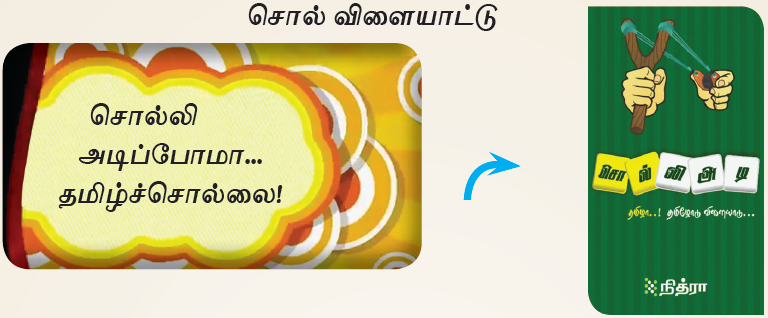
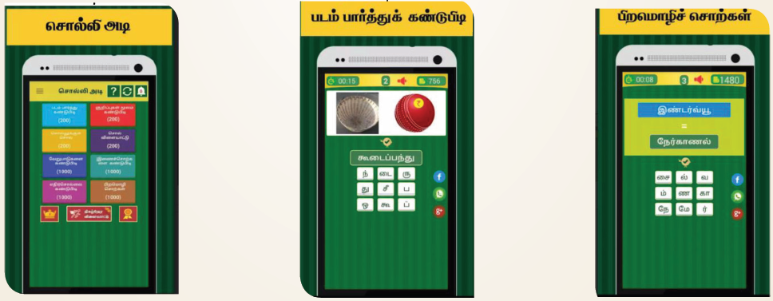
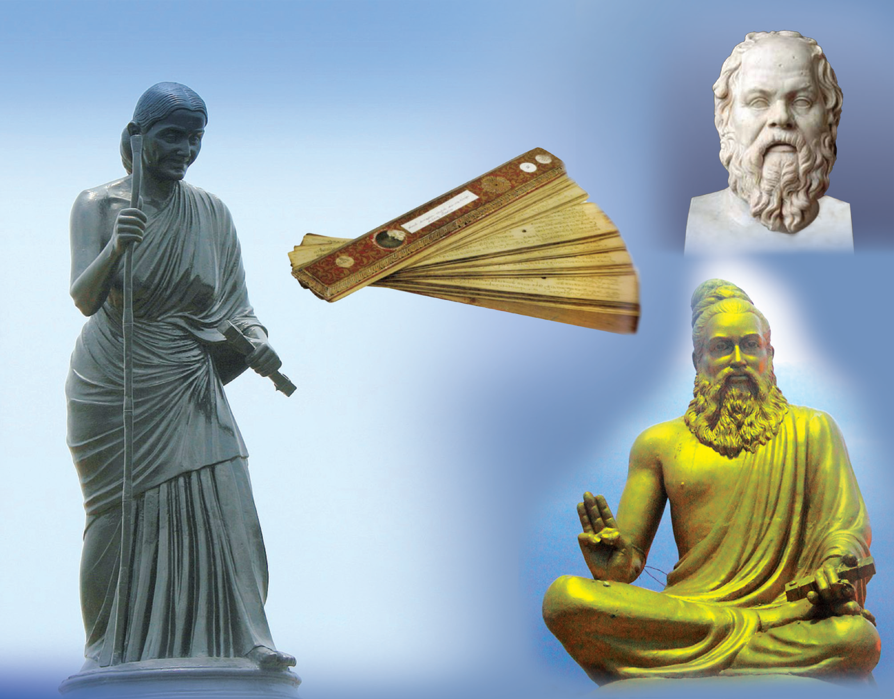

இணையச்செயல்பாடுகள்
சொல்விளையாட்டு

படிநிலைகள்:
- கொடுக்கப்பட்டிருக்கும் உரலி / விரைவுக்குறியீட்டைப் பயன்படுத்தி, “சொல்லி அடி“ செயலியை நிறுவுக.
- செயலியைத் திறந்தவுடன் வரும் திரையில் கொடுக்கப்பட்டிருக்கும் ‘படம் பார்த்துக் கண்டுபிடி‘, குறிப்புகள் மூலம் கண்டுபிடி‘, ‘சொல்லுக்கள் சொல்‘, ‘பிற மொழிச்சொற்கள்‘, ‘எதிர்ச்சொற்கள்‘ மற்றம் ‘இணைச்சொற்கள்‘ போன்ற தெரிவுகளில் ஏதேனும் ஒன்றைத் தெரிவு செய்க.
- எடுத்துக்காட்டாகக் கொடுக்கப்பட்டிருக்கம் படங்களைக்கொண்டு அதன் பெயர்களை அடையாளம் காணுதல். இதே போன்று பிற விளையாட்டுகளின் மூலம் சொற்களஞ்சிய அறிவை வளர்த்துக் கொள்க.

செயல்பாட்டிற்கான உரலி
https://play.google.com/store/apps/details?id=nithra.tamil.word.game.solliadi
ஒத்த பிற செயலிகள்
1. மாயக்கட்டம் 2. புதிர்நானூறு 3. திருக்குறள் விளையாட்டு
• கொடுக்கப்பட்டுள்ள படங்கள் அடையாளத்திற்காக மட்டுமே
இயல் இரண்டு. எல்லாரும் இன்புற

கற்றல் நோக்கங்கள்
- எல்லா உயிர்களிடத்தம் அன்பு செய்தல், பிறருக்கு உதவி செய்தல் போன்ற அறச்சிந்தனைகளை அறிதல்
- வாழும் முறைகளை அறிதல்
- பிறர் பசியைப் போக்கம் உயர் சிந்தனையை வளர்த்தல்
- பொற்றோரையும் பெரியோர்களையும் மதிக்கும் பண்பு பெறுதல்
- பிறர் பொருளை விரும்பான்மை ஓர் அறம் என்பதை உணர்தல்
- அறுவகைப் பெயர்கள், இடுகுறிப்பெயர், காரணப்பெயர்களை அறிதல்